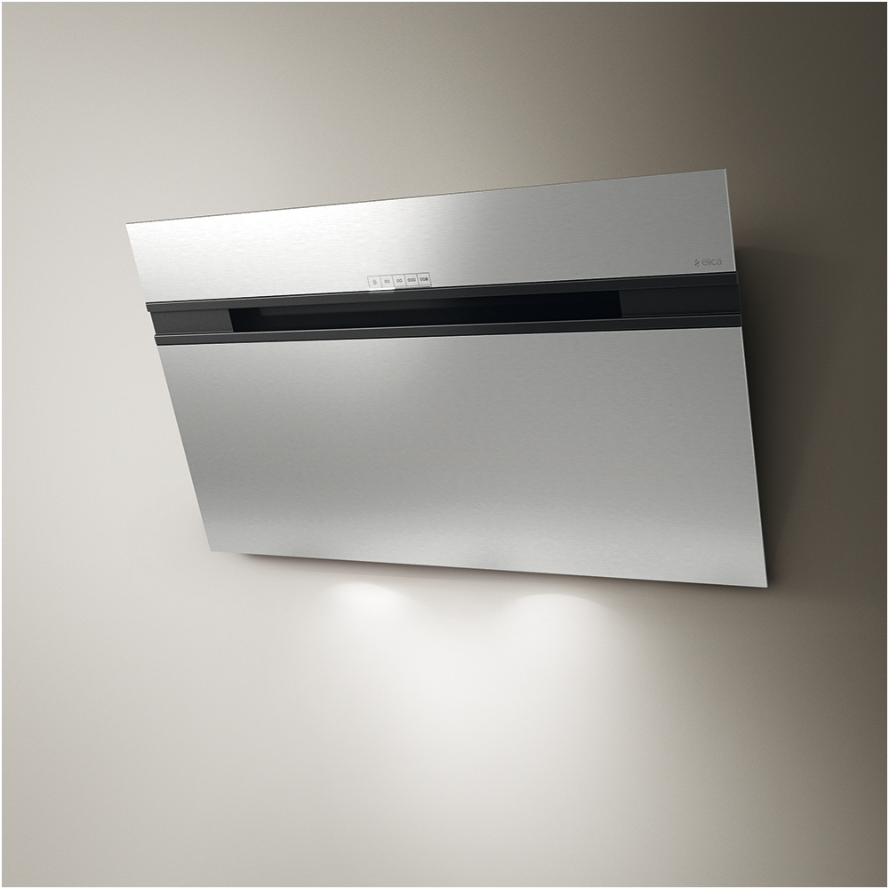
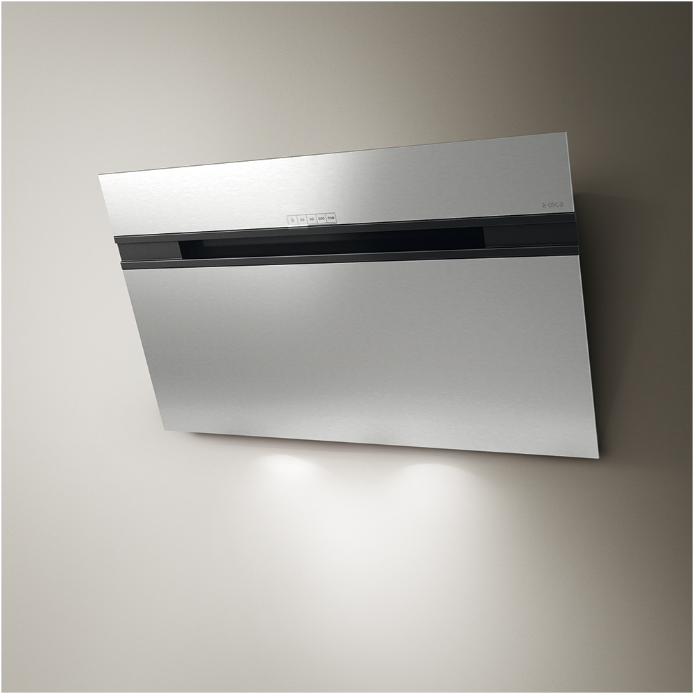

Kaitlentės ir plytelės jūsų virtuvei | NEFF
2020.10.29 10:26

Įveskite raktažodį arba gaminio kodą Raskite savo pardavėją Meniu Pagrindinis puslapis Apžvalga Gaminiai Orkaitės ir kompaktinės orkaitės Orkaitės Įmontuojamos orkaitės Garų orkaitės Mikrobangų krosnelės Kompaktinės orkaitės Kompaktinės garų orkaitės Kompaktinės orkaitės su mikrobangų funkcija Priedai orkaitėms Slide&Hide ® Kaitlentės Dujinės kaitlentės Indukcinės kaitlentės Domino kaitlentės Indukcinė kaitlentė su integruota ventiliacija Priedai kaitlentėms Garų orkaitės ir kompaktinės garų orkaitės Garų orkaitės Priedai garinėms orkaitėms Mikrobangų krosnelės Kompaktinės orkaitės su mikrobangų funkcija Įmontuojamos mikrobangų krosnelės Priedai mikrobangų krosnelėms Kavos aparatai Įmontuojami visiškai automatiniai kavos aparatai Pašildymo stalčiai ir Sous-Vide stalčiai Pašildymo stalčiai Sous-vide stalčiai Garų rinktuvai Prie sienos montuojami garų rinktuvai Pasviri garų rinktuvai Dėžiniai garų rinktuvai Plokšti garų rinktuvai Integruojami į baldus garų rinktuvai Teleskopiniai garų rinktuvai Į spintelę montuojami garų rinktuvai Prie lubų montuojami garų rinktuvai Virtuvės salelės garų rinktuvai Integruoti lubiniai garų rinktuvai Stalviršio garų rinktuvai Įtraukiami garų rinktuvai Į kaitlentes integruoti garų rinktuvai Priedai garų rinktuvams Šaldytuvai ir šaldikliai Šaldytuvai-šaldikliai Įmontuojami šaldytuvai-šaldikliai Laisvai statomi šaldytuvai-šaldikliai Šaldytuvai Įmontuojami šaldytuvai Laisvai statomi šaldytuvai Šaldikliai Įmontuojami šaldikliai Laisvai statomi šaldikliai Priedai šaldytuvams ir šaldikliams Indaplovės Įmontuojamos indaplovės Indaplovės (45 cm pločio) Indaplovės (60 cm pločio) Priedai indaplovėms Užverti Klientų aptarnavimas Atraskite NEFF Home Connect Mūsų išmanioji virtuvė Paveldas / istorija Virtuvės istorijos NEFF virtuvės šefai NEFF Slide&Hide® Energijos vartojimo efektyvumo etiketė Užverti Klientų aptarnavimas Platintojo paieška Užverti Gaminiai Kaitlentės
Kaitlentės
„LE CREUSET“ KEPSNINĘ GAUSITE DOVANŲ, PIRKDAMI „NEFF“ INDUKCINĘ KAITLENTĘ!
Pratęskite kepsnių ant grotelių sezoną su „le creuset“ kepsnine!
Kepsinės vertė 236 eur (rekomenduojama kaina).
Kepsninė „Le Creuset“ uždengia visą „Neff flex“ zoną ir tobulai tinka kepti įvairius produktus vienu metu.
Akcija vyksta iki 2018 m. balandžio 1 d.
ModeliaiKarščio reguliavimas piršto palietimu
Nesvarbu, ar gaminate lėtai, ar skrudinate didkepsnį – su FlameSelect® galite tiksliai ir intuityviai reguliuoti liepsną 9 lygiais.
Peržiūrėti dujinių kaitlenčių asortimentą Ankstesnis ToliauTinkama kaitlentė kiekvienam maisto gaminimo stiliui
Puikaus patiekalo esmė – sudedamosios dalys. Tai tinka ir kalbant apie maisto gaminimą, ir tinkamos kaitlentės pasirinkimą. Jei norite lankstumo, tinkamiausia gali būti elektrinė kaitlentė. Arba rinkitės vieną iš novatoriškų dujinių arba greitų indukcinių kaitlenčių. Negalite apsispręsti? Tuomet Domino asortimentas gali būti geriausias kaitlenčių pasirinkimas, nes jis sujungia visus išvardytus variantus.
Dujinės kaitlentės Indukcinės kaitlentės Domino kaitlentės Indukcinė kaitlentė su integruota ventiliacija Priedai kaitlentėms Ankstesnis Toliau Modelių tipai Funkcijos ...Sumanios liepsnos – mūsų dujinės kaitlentės
Kai kuriems virėjams maloniausia maistą ruošti ant liepsnos. Dujinių kaitlenčių asortimente rasite, ko reikia, nesvarbu, ar norite kepti maišydami, ar lėtai virti. 9 lygių FlameSelect® leidžia reguliuoti liepsną kaip ir su elektrine kaitlente, todėl gaminti maistą dar lengviau. Įvairių dydžių kaitlentės tinkamos praktiškai visiems puodams. Mėgstate Azijos stilių? Dual Wok turi du liepsnos žiedus, sudėtus vieną ant kito – tai sumani idėja dviejų liepsnų reguliavimui vienai skaniai užduočiai.
...daugiauPeržiūrėti dujinių kaitlenčių asortimentą
Greitos ir lanksčios – mūsų indukcinės kaitlentės
Ar mėgstate tyrinėti naujus ir neišbandytus receptus ir skonius? Indukcinių kaitlenčių asortimentas leis mėgautis kiekviena maisto gaminimo akimirka. Mūsų FlexInduction kaitlentės leidžia laisvai perkelti indus ant kaitlentės. Puodai aptinkami automatiškai ir kaitinama ten, kur reikia. Mūsų kaitlentės siūlo dar daugiau, kad pasiektumėte skanių rezultatų. Pavyzdžiui, TwistPadFire®, leidžiantis piršto palietimu valdyti kaitinimą. Paprastas sukamasis judesys rodomuoju pirštu leidžia nustatyti temperatūrą.
...daugiauPeržiūrėti indukcinių kaitlenčių asortimentą
Pritaikytas maisto gaminimas – mūsų Domino kaitlentės
Žinome, kad gaminant maistą kartais vieno pasirinkimo nepakanka. Norite tradicinio dujinės viryklės pojūčio, bet ir įmantraus Teppan Yaki? Domino kaitlenčių asortimentas leidžia suderinti visas maisto gaminimo rūšis vienoje kaitlentėje. Tiesiog maišykite ir derinkite – Domino yra pritaikyta kaitlentė, suteikianti būtent tai, ko reikia, gaminant norimus patiekalus. Nesvarbu, ar tai FlexInduction, dujinė viryklė, Wok degiklis, Teppan Yaki ar elektrinė kaitlentė. Domino asortimentas jūsų virtuvėje sutalpina viso pasaulio virtuves.
...daugiauPeržiūrėti Domino kaitlenčių asortimentą
Kaitlenčių priedai
Yra daugybė būtų paversti maisto gaminimą jaudinančiu. Vienas iš jų – tinkamų įrankių turėjimas. Plačiame priedų asortimente rasite puodų ir keptuvių, sukurtų specialiai mūsų indukcinėms kaitlentėms. Prie dujinės kaitlentės galite pridėti kiniškos keptuvės žiedą, atrasti Teppan Yaki kepimo indų FlexInduction kaitlentėms arba rinktis iš puikių įrankių, pvz., peilių ir mentelių. Baigus kurti virtuvės magiją, pasiūlysime ir tinkamų valymo bei priežiūros produktų, kad prietaisai išliktų puikios būklės daugybei būsimo maisto gaminimo seansų.
...daugiauPereiti prie kaitlenčių priedų
Mūsų paslaugosNEFF techninė priežiūra užtikrina išskirtinį rūpinimąsi prietaisu. Patikima, kompetentinga ir greita priežiūra prieš perkant ir paskui.
Susisiekite su NEFF Atraskite NEFFČia rasite virtuvės istorijų, receptų, renginių, kulinarijos mokyklų ir įkvėpimo maisto gaminimui.
Atraskite daugiau Raskite savo platintojąRaskite artimiausią NEFF pardavėją ir susikurkite svajonių virtuvę.
Susisiekite Dalinkitės Facebook Spausdinti Gaminiai Apžvalga Viryklės ir orkaitės Kaitlentės Gariniai prietaisai Mikrobangų krosnelės Kavos virimo aparatai Stalčiai Garų rinktuvai Šaldytuvai ir šaldikliai Indaplovės Klientų aptarnavimas ir pagalba Apžvalga Kontaktai ir informacija Atraskite NEFF Apžvalga Paveldas Virtuvės istorijos Bendroji informacija Apžvalga Kontaktai ir informacija apie įmonę Teisiniai pranešimai Naudojimo sąlygos Kaip „Neff“ saugo jūsų privatumą Kaip susisiekti Teisinė informacija- Kaitlentės | Indukcinės kaitlentės | Dujinės kaitlentės ...
- Kaitlentės gera kaina internetu | pigu.lt
- Elektrinės, Indukcinės KAITLENTĖS pigiau Žema kaina | Varle.lt
- Nešiojamos, laisvai pastatomos kaitlentės | ZEMAKAINA.LT
- Kaitlentės | Senukai.lt
- Elektrinės kaitlentės prijungimas | VilniausMeistrai.lt
- Kaitlentės | AEG
- Kaitlentės - Mixtechnika
- Kaitlentės | imperija.lt
- Kaitlentės | Nemokamas pristatymas - eBIKUVA
- Kaitlentės | Indukcinės kaitlentės | Dujinės kaitlentės ...
ELEKTRINĖS KAITLENTĖS PAJUNGIMAS. Profesionaliai pajungiame įmontuojamas elektrines ir elektrines indukcines kaitlentes prie 220V ir 380V elektros tinklo įvado. DĖMESIO! Pajungdami elektrinį kaitinimo paviršių savarankiškai, rizikuojate nepataisomai sugadinti prietaisą ar sutrikdyti sveikatą. Neteksite gamyklinės prietaiso garantijos.
- Kaitlentės gera kaina internetu | pigu.lt
Kaitlentės tipas: ElektrinisKaitinimo zonų skaičius: 1 vnt.Bendra galia: 1500 WatAukštis: 81 mmPloti.. €30.00. ELDOM PI100 induction cooker. Product colour: WhiteDevice type: HobTop surface material: PVCWidth: 330 mmDepth: 550 mm.. €31.00. PROMIS four-burner gas stove KG400 white ...
- Elektrinės, Indukcinės KAITLENTĖS pigiau Žema kaina | Varle.lt
Kaitlentės kokybiškam maisto gaminimui namuose. Parduodame elektrines ir dujines, šiuolaikiško dizaino kaitlentes. Pažangus funckionalumas leidžia lengvai kontroliuoti maisto gaminimo procesą, kaitlentes paprasta valyti ir prižiūrėti.
- Nešiojamos, laisvai pastatomos kaitlentės | ZEMAKAINA.LT
Kaitlentės. Profesionalų šefų rezultatai Jūsų virtuvėje naudojant AEG kaitlentę, nesvarbu, ar tai būtų dujinė, keraminė, ar indukcinė. AEG indukcinė kaitlentė „MaxiSense®“ su technologija „FlexiBridge“ leidžia pritaikyti maisto gaminimo sritį sujungiant iki 4 segmentų, kuriuose karštis pasiskirsto tolygiai.
- Kaitlentės | Senukai.lt
Kaitlentės tipas yra vienas svarbiausių šio virtuvės įrenginio pasirinkimo kriterijų – mūsų asortimente yra elektrinės kaitlentės, dujinės kaitlentės, įmontuojamos kaitlentės, kombinuotos kaitlentės ir indukcinės kaitlentės. Kaitlentė pateisins visus Jūsų lūkesčius, nes yra galimybė pasirinkti reikalingą kaitviečių ...
- Elektrinės kaitlentės prijungimas | VilniausMeistrai.lt
Domino kaitlentės taip vadinamos dėl savo išskirtinės stačiakampės formos. Vieną greta kito įtaisant kelių skirtingų tipų blokus, galite sudaryti lanksčią ir patogią kaitlentę. Nepamirškite, kad visada prie standartinės kaitlentės gali pridėti vieną domino kaitlentę.
- Kaitlentės | AEG
Kaitlentės internetu: nemokamas pristatymas per 1-2 d.d. prekių grąžinimas per 14 d. 100% saugus pirkimas. Tel.: 8 700 88770
- Kaitlentės - Mixtechnika
Paprastai, kaitlentės turi 2, 3, 4 kaitvietes, kurių dydžiai taip pat skiriasi. Kokio dydžio ir kiek kaitlenčių pasirinksite priklausys nuo jūsų gaminimo įpročių bei turimos erdvės namuose. Juk jeigu namuose praleidžiate mažai laiko, o dar rečiau gaminate, tuomet jums gali užtekti prietaiso su 2 kaitvietėmis.
- Kaitlentės | imperija.lt
Indukcinės kaitlentės yra pranašesnės, nes taupo elektrą, jų paviršius neįkaista, tad šis kaitlenčių tipas yra saugus. Indukcinės kaitlentės nepridega, tad jas prižiūrėti yra gana paprasta. Indukcinei kaitlentei tinka ir nebrangūs puodai ar keptuvės. Indukcinės kaitlentės internetu.
- Kaitlentės | Nemokamas pristatymas - eBIKUVA
Kaitlentės paprastai turi keturias skirtingų dydžių kaitvietes, tačiau yra ir mažoms virtuvėms pritaikytų dviviečių kaitlenčių. Internetinėje parduotuvėje senukai.lt Jūs rasite įvairių tipų kaitlenčių savo namams. Krepšelyje jau yra maksimalus užsakomas prekės kiekis.
ELEKTRINĖS KAITLENTĖS PAJUNGIMAS. Profesionaliai pajungiame įmontuojamas elektrines ir elektrines indukcines kaitlentes prie 220V ir 380V elektros tinklo įvado. DĖMESIO! Pajungdami elektrinį kaitinimo paviršių savarankiškai, rizikuojate nepataisomai sugadinti prietaisą ar sutrikdyti sveikatą. Neteksite gamyklinės prietaiso garantijos.
Kaitlentės tipas: ElektrinisKaitinimo zonų skaičius: 1 vnt.Bendra galia: 1500 WatAukštis: 81 mmPloti.. €30.00. ELDOM PI100 induction cooker. Product colour: WhiteDevice type: HobTop surface material: PVCWidth: 330 mmDepth: 550 mm.. €31.00. PROMIS four-burner gas stove KG400 white ...
Kaitlentės kokybiškam maisto gaminimui namuose. Parduodame elektrines ir dujines, šiuolaikiško dizaino kaitlentes. Pažangus funckionalumas leidžia lengvai kontroliuoti maisto gaminimo procesą, kaitlentes paprasta valyti ir prižiūrėti.
Kaitlentės. Profesionalų šefų rezultatai Jūsų virtuvėje naudojant AEG kaitlentę, nesvarbu, ar tai būtų dujinė, keraminė, ar indukcinė. AEG indukcinė kaitlentė „MaxiSense®“ su technologija „FlexiBridge“ leidžia pritaikyti maisto gaminimo sritį sujungiant iki 4 segmentų, kuriuose karštis pasiskirsto tolygiai.
Kaitlentės tipas yra vienas svarbiausių šio virtuvės įrenginio pasirinkimo kriterijų – mūsų asortimente yra elektrinės kaitlentės, dujinės kaitlentės, įmontuojamos kaitlentės, kombinuotos kaitlentės ir indukcinės kaitlentės. Kaitlentė pateisins visus Jūsų lūkesčius, nes yra galimybė pasirinkti reikalingą kaitviečių ...
Domino kaitlentės taip vadinamos dėl savo išskirtinės stačiakampės formos. Vieną greta kito įtaisant kelių skirtingų tipų blokus, galite sudaryti lanksčią ir patogią kaitlentę. Nepamirškite, kad visada prie standartinės kaitlentės gali pridėti vieną domino kaitlentę.
Kaitlentės internetu: nemokamas pristatymas per 1-2 d.d. prekių grąžinimas per 14 d. 100% saugus pirkimas. Tel.: 8 700 88770
Paprastai, kaitlentės turi 2, 3, 4 kaitvietes, kurių dydžiai taip pat skiriasi. Kokio dydžio ir kiek kaitlenčių pasirinksite priklausys nuo jūsų gaminimo įpročių bei turimos erdvės namuose. Juk jeigu namuose praleidžiate mažai laiko, o dar rečiau gaminate, tuomet jums gali užtekti prietaiso su 2 kaitvietėmis.
Indukcinės kaitlentės yra pranašesnės, nes taupo elektrą, jų paviršius neįkaista, tad šis kaitlenčių tipas yra saugus. Indukcinės kaitlentės nepridega, tad jas prižiūrėti yra gana paprasta. Indukcinei kaitlentei tinka ir nebrangūs puodai ar keptuvės. Indukcinės kaitlentės internetu.
Kaitlentės paprastai turi keturias skirtingų dydžių kaitvietes, tačiau yra ir mažoms virtuvėms pritaikytų dviviečių kaitlenčių. Internetinėje parduotuvėje senukai.lt Jūs rasite įvairių tipų kaitlenčių savo namams. Krepšelyje jau yra maksimalus užsakomas prekės kiekis.
 
